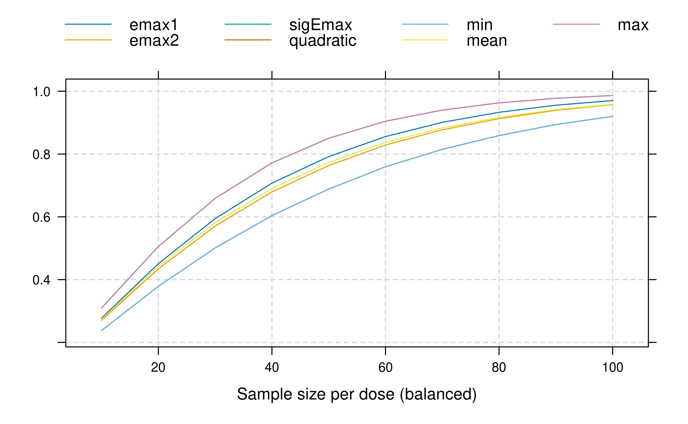

In this vignette we will take a closer look at the design stage and see how to perform power and sample size calculations for MCP-Mod with the DoseFinding package.
We will consider the same example study and the same candidate models as in the vignette for analysis of normally distributed data.
library(DoseFinding)
library(ggplot2)
doses <- c(0, 12.5, 25, 50, 100)
guess <- list(emax = c(2.6, 12.5), sigEmax = c(30.5, 3.5), quadratic = -0.00776)
mods <- do.call(Mods, append(guess, list(placEff = 1.25, maxEff = 0.15, doses = doses)))
plotMods(mods)Power for multiple contrast test versus group sample size
In this section we will investigate at how power varies with sample
size. Note that the maximum effect size within the dose-range is fixed
through maxEff in the candidate models.
First we calculate the matrix of optimal contrasts (w=1
denotes homoscedastic residuals with equal group sizes, see
?optContr).
In powN we specify the sample sizes for which to
calculate the power. We request five equally sized groups with
alRatio = rep(1, 5). We fix the residual standard deviation
with sigma = 0.34, and calculate the power for a one-sided
test at level 0.05.
contMat <- optContr(mods, w=1)
pows <- powN(upperN = 100, lowerN = 10, step = 10, contMat = contMat,
sigma = 0.34, altModels = mods, alpha = 0.05, alRatio = rep(1, 5))
plot(pows) This shows the power values of the maximum contrast test assuming each of the different candidate models to be true. The minimum, mean and maximum power over the candidate models are also included in the plot.
There also is a wrapper function that calculates the group sample
sizes needed in order to attain a specific power. The powers under each
alternative model are combined with sumFct. Here we look at
the minimum power, other potential choices are mean or
max.
sampSizeMCT(upperN = 150, contMat = contMat, sigma = 0.34, altModels = mods,
power = 0.9, alRatio = rep(1, 5), alpha = 0.05, sumFct = min)Sample size calculation
alRatio: 1 1 1 1 1
Total sample size: 465
Sample size per arm: 93 93 93 93 93
targFunc: 0.9014 Power versus treatment effect
In this section we fix the group sample size at 90 and vary the
treatment Effect maxEff. Note how power decreases if we
assume a higher residual standard deviation.
plot_power_vs_treatment_effect <- function(guess, doses, group_size, placEff, maxEffs,
sigma_low, sigma_mid, sigma_high, alpha) {
mods_args_fixed <- append(guess, list(placEff = placEff, doses = doses))
grd <- expand.grid(max_eff = maxEffs, sigma = c(sigma_low, sigma_mid, sigma_high))
min_power <- mean_power <- NA
for (i in 1:nrow(grd)) {
mods <- do.call(Mods, append(mods_args_fixed, list(maxEff = grd$max_eff[i])))
p <- powMCT(optContr(mods, w = 1), alpha, mods, group_size, grd$sigma[i])
min_power[i] <- min(p)
mean_power[i] <- mean(p)
}
grd$sigma <- factor(grd$sigma)
pdat <- cbind(grd, power = c(min_power, mean_power),
sumFct = rep(factor(1:2, labels = c("min", "mean")), each = nrow(grd)))
subt <- sprintf("group size = %d, α = %.3f", group_size, alpha)
gg <- ggplot(pdat) + geom_line(aes(max_eff, power, lty = sigma)) +
facet_wrap(~sumFct, labeller = label_both)+
xlab("maximum treatment effect") + ylab("power") +
labs(title = "Minimum power vs effect size for different residual standard deviations", subtitle = subt) +
theme(legend.position = "bottom") +
scale_y_continuous(limits = c(0,1), breaks = seq(0,1,by=.1))
return(gg)
}
plot_power_vs_treatment_effect(guess, doses, group_size = 90, placEff = 1.25,
maxEffs = seq(0.01, 0.3, length.out = 15),
sigma_low = 0.3, sigma_mid = 0.34, sigma_high = 0.4, alpha = 0.05)Power under mis-specification
MCP-Mod depends on the candidate models selected. What if the true model is not among the chosen candidate shapes? Often MCP-Mod is rather robust. To illustrate this, let’s assume an exponential model shape is the true model, which is not among the candidate shapes. Let this exponential model have small responses for all doses but the last (here assuming 20% of the overall treatment effect is achieved at the 50μg dose). All other candidate shapes assume that almost the full effect is achieved for the 50μg dose, so this shape is quite different from all other shapes included in the candidate set.
guess_miss <- list(exponential = guesst(50, 0.2, "exponential", Maxd = max(doses)))
mods_miss <- do.call(Mods, c(guess, guess_miss, list(placEff = 1.25, maxEff = 0.15, doses = doses)))
plot(mods_miss, superpose = TRUE)Now we compare the power calculation under the exponential model with those based on the original candidate set, in both cases only the contrasts from the original candidate set are used.
plot_power_misspec <- function(guess, guess_miss, placEff, maxEff, doses,
upperN, lowerN, step, sigma, alpha) {
mods_extra_par <- list(placEff = placEff, maxEff = maxEff, doses = doses)
pown_extra_par <- list(upperN = upperN, lowerN = lowerN, step = step,
sigma = sigma, alpha = alpha, alRatio = rep(1, length(doses)))
mods_miss <- do.call(Mods, c(guess_miss, mods_extra_par))
mods_ok <- do.call(Mods, c(guess, mods_extra_par))
cm_ok <- optContr(mods_ok, w = 1)
p_miss <- do.call(powN, c(pown_extra_par, list(contMat = cm_ok, altModels = mods_miss)))
p_ok <- do.call(powN, c(pown_extra_par, list(contMat = cm_ok, altModels = mods_ok)))
pwr <- rbind(data.frame(n = as.numeric(rownames(p_ok)), p_ok[, c("min", "mean")], miss = FALSE),
data.frame(n = as.numeric(rownames(p_miss)), p_miss[, c("min", "mean")], miss = TRUE))
gg <- ggplot(pwr, aes(group = miss, color = miss)) +
geom_line(aes(n, min, linetype = "minimum")) +
geom_line(aes(n, mean, linetype = "mean")) +
scale_color_discrete(name = "miss-specified") +
scale_linetype_discrete(name = "aggregation") +
labs(title = "Mean and minimum power under mis-specification") +
xlab("group size") + ylab("power") +
scale_y_continuous(limits = c(0,1), breaks = seq(0,1,by=.1))
return(gg)
}
plot_power_misspec(guess, guess_miss, placEff = 1.25, maxEff = 0.15, doses = doses,
upperN = 100, lowerN = 10, step = 10, sigma = 0.34, alpha = 0.05)As expected, the power decreases as the assumed underlying exponential model shape differs substantially from the shapes included in the candidate set. However, the power loss is only in the range of 10-15%.
Sample size based on metrics other than power for the multiple contrast test
The main purpose of a dose-finding study is selection of a dose to take forward into Phase 3. Establishment of a trend over placebo is hence only a minimum requirement before considering dose-selection.
If one considers sample size calculation to allow for adequate dose
selection (see ?TD) it turns out that this is a much harder
problem than establishing a dose-response effect versus placebo based on
the MCP-part: The sample size required for adequate accuracy in
estimation of a target dose (e.g. the smallest dose achieving a relevant
improvement over placebo) is usually several-fold higher than the sample
size needed to have adequate power for the MCP-part. This should not
come as a surprise as dose-estimation is primarily a comparison among
the investigational doses, while the MCP-part establishes an effect
versus placebo. Chapter 12 in O’Quigley, Iasonos,
and Bornkamp (2017) illustrates this with simulations, based on
the planMod function (see ?planMod for example
usage).
Here we only consider a brief example: Consider the
sigEmax(30.5, 3.5) model from the first section and assume
that it is the “true model” under which we want to investigate the
operating characteristics of fitting sigEmax models. Suppose we want to
achieve a target improvement of \(\Delta=0.12
L\) over placebo. One can calculate that this needs a target dose
TD of 44.4 mg under the true model. Keep this number in mind for later.
Now we can ask the question what the variability in TD estimation would
be. To answer it, we can run a simulation using the planMod
function. If we use the sample size n=93 from the power calculation
above, we find:
set.seed(42)
## Note: Warnings related to vcov.DRMod can be ignored if small relative to the total number of simulations
pm <- planMod("sigEmax", Mods(sigEmax=c(30.5, 3.5), placEff=1.25, maxEff=0.15, doses=doses),
n=93, sigma = 0.34, doses=doses, simulation=TRUE, nSim=5000, showSimProgress = FALSE,
bnds = defBnds(max(doses)))Running simulations
summary(pm, Delta=0.12)Additional simulation metrics (nSim=5000)
Eff-vs-ANOVA cRMSE lengthTDCI P(no TD) lengthEDCI
sigEmax 1.65 0.0392 62.3 0.153 NAThe output shows different outputs (see ?planMod for
details) of most interest here is the length of the quantile range for a
target dose (lengthTDCI). By default this is calculated by
taking the difference of 5% and 95% quantile of the empirical
distribution of the dose estimates in the simulation. The metric
P(no TD) indicates in how many simulations runs no TD could
be identified.
From the output it can be seen that the variation in the TD estimates
is quite large and quite unsatisfactory. Experimenting with different
values of n, one quickly realizes that we would need for
example 1650 patients to get the length of this interval down to 20
mg.
pm <- planMod("sigEmax", Mods(sigEmax=c(30.5, 3.5), placEff=1.25, maxEff=0.15, doses=doses),
n=1650, sigma = 0.34, doses=doses, simulation=TRUE, nSim=5000, showSimProgress = FALSE,
bnds = defBnds(max(doses)))Running simulations
summary(pm, Delta=0.12)Additional simulation metrics (nSim=5000)
Eff-vs-ANOVA cRMSE lengthTDCI P(no TD) lengthEDCI
sigEmax 1.4 0.0102 20.2 0.0034 NANote that the variability in TD estimation depends quite strongly on the assumed true dose-response model, see the simulation results in Chapter 12 in O’Quigley, Iasonos, and Bornkamp (2017).
In practice, to keep the size of the study feasible, one needs to find a compromise between dose-response signal detection and estimation precision as the criteria for sample size determination. Irrespective, it is important to properly evaluate the operating characteristics of a given design (including sample size) to understand its strengths and limitations.
In practice of course the dose-response curve of the main efficacy endpoint, is not the only consideration in dose-selection for Phase III: Results for other efficacy/biomarker endpoints, but also the results for tolerability or safety markers, will contribute to that decision.